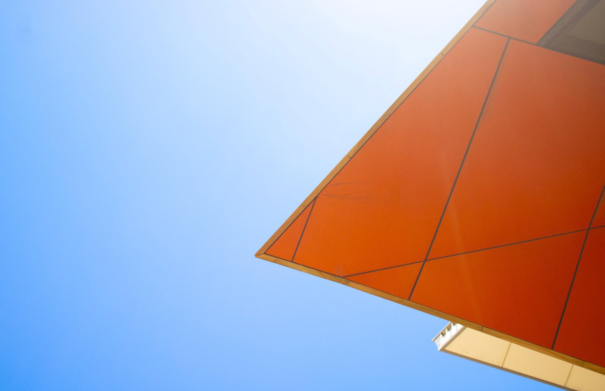
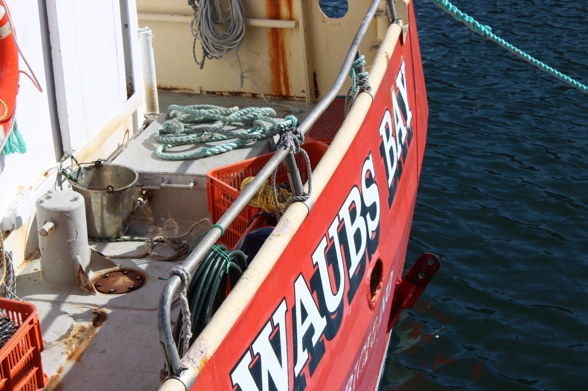
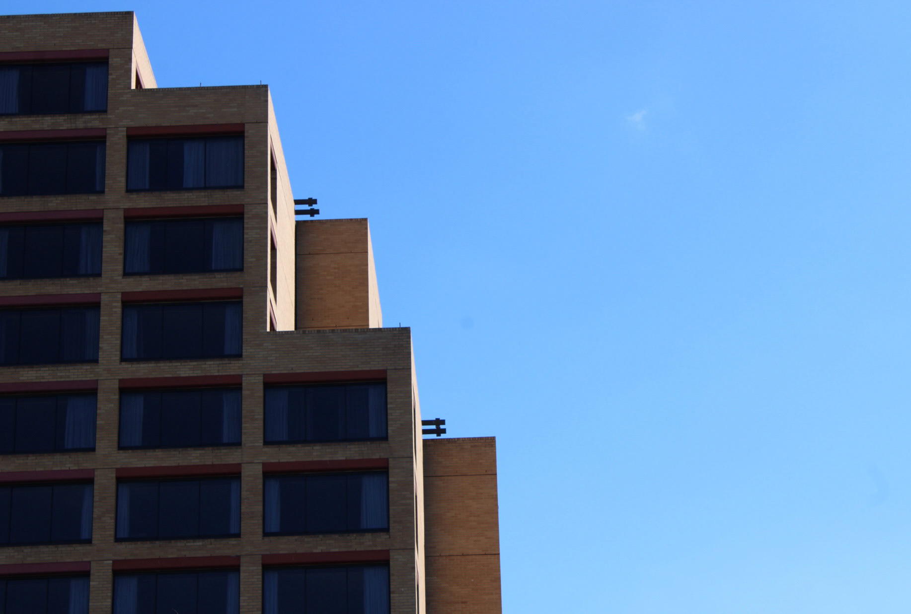
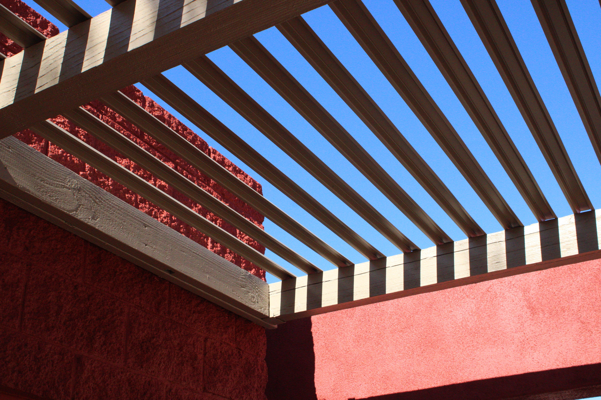
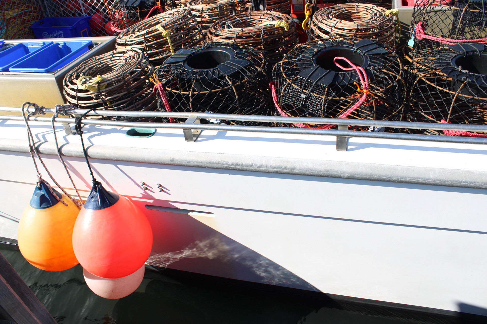

From the series
Texture · Light · Frame


A personal photo series on material, light, and the quiet spaces in between, shot, edited, and art-directed end to end.

Overview
Intervals is where I keep my eye sharp. It's a self-directed series about texture and composition: working materials, urban surfaces, and the pauses between subjects.
It doubles as a sandbox for the photography and direction skills I bring into brand work: seeing a frame, building a palette, and editing for mood.
From the series
Texture · Light · Frame

The Challenge
No set, no brief, just the discipline of noticing. The goal was a series that holds together as a body of work: consistent in tone, varied in subject.
My role: Everything: concept, shooting, editing, sequencing, and the color treatment that ties it together.

Creative Process
Gallery

"Photography is how I practice taste. It makes every brand brief sharper."
Julia HantlaOutcome
An evolving body of work that feeds directly into my art direction, a reliable source of palettes, compositions, and references for client projects.